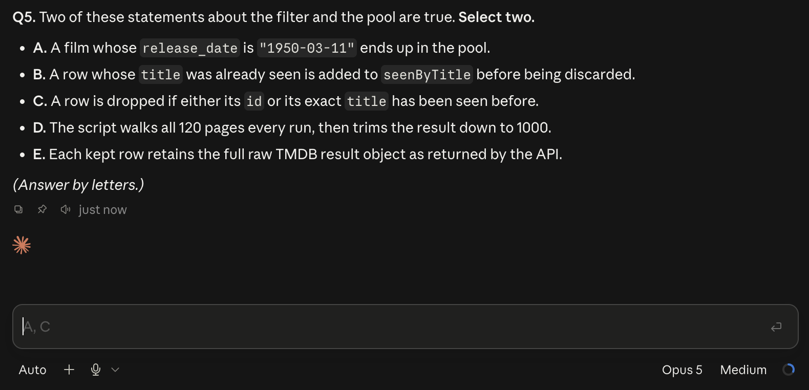
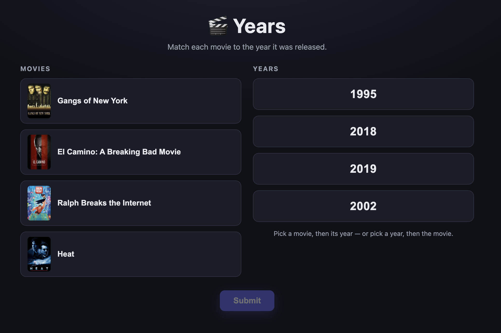
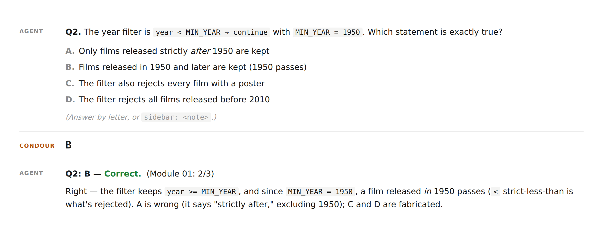
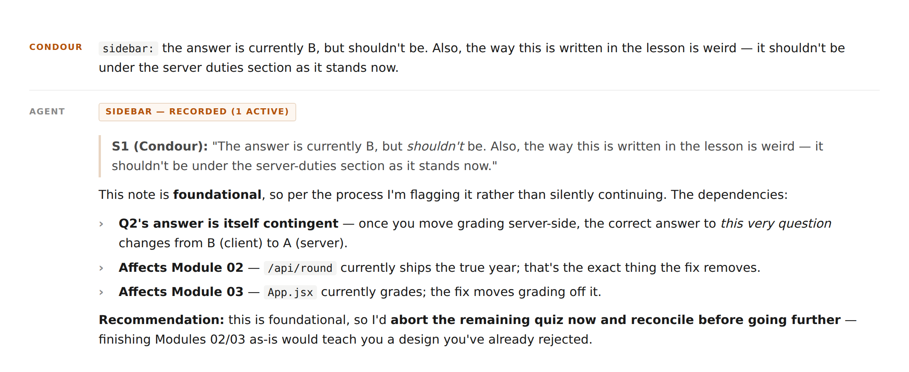
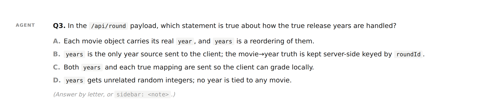
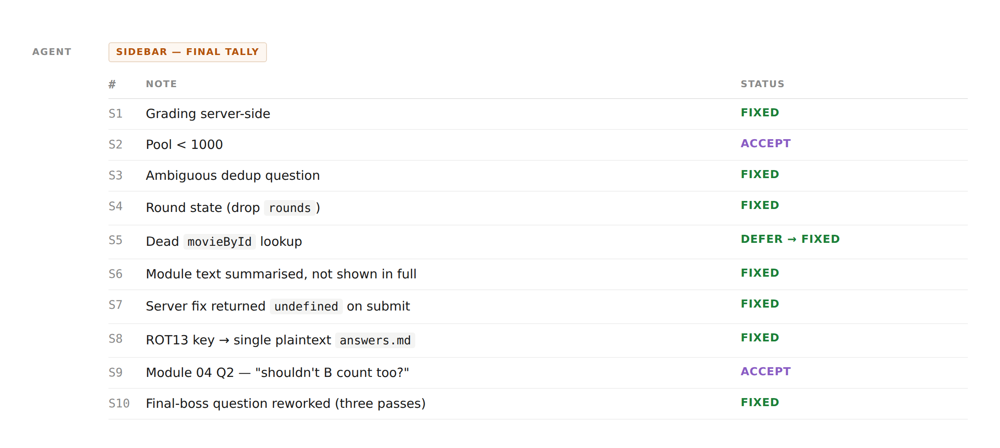

Knowing is Half the Battle: Staying Up to Speed with Your Agent
It started so small. Code suggestions through co-pilot. Then more involved conversations with the LLM, painstakingly copying blocks of code out of a chat window as they were generated. Then we let it write into the files. Then one day we said: ok, here’s git and gh — make a PR.
We’re not going back. We’ve taken the student driver sticker off the bumper, and started looking out the window, even on the highway. And it’s mostly working. We’ve vastly increased our delivery speed, and frankly, the LLM is writing better comments and documentation than we would.
Sure, we’re watching the process. We’re making the architectural decisions, putting tests in place to avoid regressions, reading the diffs. But the agent is writing more than we can read. It’s making some architectural decisions on its own. It’s interpreting business logic.
Are we still in control?
Every PR is a classroom
We can be. To paraphrase Homer, AI can be the cause of and solution to badly designed code.
I figured this out while first implementing Kafka consumers at work. The LLM did its thing and everything seemed to be working well, but I really had no idea what it had built; it was a new technology to me. So rather than stare at the PR cold, I told the LLM: Make me a lesson plan. Teach me what you just did. Then quiz me!
It worked surprisingly well. And with a little trial and error, I turned it into a skill, and made it public: github.com/condour/lesson-plan-quiz.
The method
Here’s what I told the agent to do.
1. Keep it snappy. Is this a quick PR? A major feature? An intro to a large codebase for new devs? Give the agent a sense of scope. Let’s face it - we don’t need to know the graphic details of every map and filter. We need a conceptual model and confidence that it’s not writing spaghetti. The model will aim for about 30-45 minutes on average, but when we tell it to make a lesson, we can tweak this to fit the depth of the change.
2. Decide what to teach. The agent is instructed to think this through carefully, and it’s not always obvious. Naming things, for instance - that’s famously hard! Do we trust how our agent comes up with terminology? Do I understand its terminology? What decisions and tradeoffs did it make along the way? Also, what can the agent assume we know already? Is there a new package? Does this involve papering over some nasty business logic which forms important context?
3. Break it up. Once there’s a general idea of the material to be covered, the agent breaks it into modules. Each module teaches one concern, quoting code inline as necessary, and ends with several multiple-choice questions. The markdown gets committed to the repo. The answers go in a separate file. No cheating!
4. Start off easy. End with a final boss. The first module should be an intro to the concepts we’ll be working with. And for all but the last module, make sure every question is answerable from the module’s text alone. Then we’ll leave a last section where the questions force the reader to dive into the source. It doesn’t have to be brutal. It just has to prove they know what’s where. That last round should be a little more intense, though. In a way, it’s really a test of the test itself, making sure the previous material left the reader comfortable enough to hunt around.
5. Run the quiz. Have the agent run it in chat, one question at a time. At the most basic, this means showing the full text of the module, then going question-by-question through the quiz. Fancier UX might make our choices into actual buttons, but I’m wary of prescribing too much here; this field is moving quickly and the capabilities change so often that it’s hard to know what’s available. At one point I realized that Claude code (through the desktop interface) was giving me autosuggestions of the right answers!

6. Sidebar, your honor! When I first built this, I found myself constantly interrupting the agent. So I decided to pave that cow path and formalize a “sidebar” feature. Throughout the run, the model is instructed to solicit your concerns, and decide how to respond. The list is visible to the agent as it goes, so it can point out later lesson content or questions that hinge on how a note gets resolved - and tell you when an issue is big enough that finishing the run is a waste of time. Often, these asides can be accumulated for addressing en bloc. But sometimes it’s a good idea to stop, address major code changes, and rewrite the quiz.
An actual example
I’ve been using this for a while at work, but I wanted a clean toy example. I wanted something fun, and I’m a movie guy, so I had the agent build a small web game called years. It shows four movie titles and four release years, and you match each movie to its year. It’s fairly simple, but there’s enough there there to create a real lesson: a data-loading pipeline against TMDB, an Express backend, a React frontend, and some state management decisions. I toyed with using a language I didn’t know, but I wanted to focus on the code rather than on an unfamiliar ecosystem, so I stuck with Javascript. You can look through the source at github.com/condour/movie_years.

The coding process was fairly easy; even using a low cost model, I had something up and running in an hour or so. Then I had it write a lesson using the skill, in five modules: big picture, data pipeline, round generation, client state, and a code-reading round.
I had a second instance of the agent run the quiz. Not a necessary part of the process, but I feel it saved some context for both tasks – including my own ability to scan through our progress and make sense of it.

Sidebars a-poppin’
The session went better than I’d hoped. In both writing the code and writing the test, the agent had done a competent job, but made a variety of questionable choices.
Right off the bat, it had a section titled “Two roles for ‘backend’” where the second bullet was about who would determine whether an answer was correct: “correctness judge: the client.”
The writing issue was obvious: It was calling out two roles for backend and then saying one of them was frontend. But also: the client was not the right place to be assessing the answer!
return {
roundId: crypto.randomUUID(),
// Movies include their year so the client keeps the mapping; the client
// itself is the source of truth for correctness after submission.
movies: picked.map(({ id, title, year, poster }) => ({ id, title, year, poster })),
years,
};For a casual game with no scoring, maybe that’s fine, but a cheater could open up the network tab and look at the right answers in the payload. Is it a defensible choice for a toy movie game with no leaderboard? Sure, probably. Is it how I would’ve designed it? No. Basic separation of concerns: the frontend handles displaying the question and user input, but the generation and assessment of questions should be kept together on the back.
I gave it two notes — the questionable division of responsibility, and the mangled paragraph.

The agent and I decided this was foundational - we needed to fix it immediately. In a few minutes, it had fixed the code and rewritten the lesson to reflect the changes. We continued.
Onward
We handled the next few issues without a major rewrite. Some examples:
The lesson showed me that the code first downloads from the API, then throws out adult titles and anything before 1950. This raised a slight alarm bell - fetching then filtering sounds like a recipe for not getting enough stuff. I was pretty quickly convinced it was fine - the content of the downloaded movies doesn’t change much, since it’s sorted by popularity, and it grabs more content than it actually needs, so it’s a purely academic issue. If this were for production, I might be convinced to loop this until 1,000 is reached, but it wouldn’t be the first thing I tackled. I let this one slide.
Another question asked what happens when the same title turns up twice. The key said “C: skipped because the title is already in a Set.” I said it should be “D, the higher vote count survives” and I thought about how often titles are reused (see: Disney, live action remakes). Turns out it was both - we were already sorting by popularity and the second one was getting skipped. But it wasn’t strictly because of the Set being unique! There’s actually a guard first:
if (seenById.has(r.id) || seenByTitle.has(r.title)) continue;
seenByTitle.add(r.title);So, no code change needed, but we made a note to clarify the possible answers. And we moved on.
Eliminating state

I didn’t get very far before I realized we had another problem. The eagle-eyed among you may have noticed the line roundId: crypto.randomUUID() earlier, in the first snippet. Originally, that didn’t do anything at all - probably something the agent thought it would need, then never used. But while moving the assessment to the backend, the agent gave it a job:
// Server-side answer keys for in-flight rounds, keyed by round id.
// The true year mapping is NEVER sent to the client (see buildRound), so a
// player cannot read the answer out of the page state or the bundle.
const rounds = new Map(); // roundId -> { byId: Map(movieId -> year), years }So after moving state to the backend, every time a user started the round, the server would make up the id, write the answers into a running list in memory, and hand the id to the frontend. It would then use that roundId to look up the answers and mark them. In fixing the previous problem it created a new complication - state in the backend that needed to be managed.
This had several downsides:
- The rounds would need to be disposed of. Even assuming the server got rid of completed rounds, abandoned rounds would accumulate.
- A restart of the server would remove any games in progress.
- If the backend ever needed to be load balanced, there’d be storage in multiple instances, which would either require sticky sessions or another storage solution like redis or a database.
All solvable problems, but the thing is - you don’t need it!
Every answer is trivially derivable. The server reads movies.json when it starts up, and every movie in there has its year attached. It’s unclear why the agent went with this approach, but it’s possible that the initial roundId was generated without forethought in the hopes it might be useful, then the agent picked it up in the second round and figured it’d be the path of least resistance.
This required another stop-and-fix.
More dead code
In the “final boss” section, one of the questions asked, “Where does this variable get used:”
const movieById = Object.fromEntries(round.movies.map((m) => [m.id, m]));The correct answer was “B. It is never referenced anywhere else in the file — dead code.”
In a non-toy project, a linter would’ve found this - it’s particularly cut-and-dry. But the skill specifcally calls out: Dead code and doc/code mismatches are fair game. This got deferred and fixed at the end.
Wrapping up
By the end of the run, we had fixed eight problems - two major, the rest minor - and accepted two as ok.

That’s a lot of improvement, for a quiz that took a few minutes for the agent to create!
Before the review the game would’ve been fine, for a demo. But if it was something for public consumption, we’ve seen that it had a few shortcomings. The stakes are low for toy quiz answers, but a similar issue in a production product might’ve been a real security hole.
Remain an Expert
Guided properly, agents can give you back your sense of control. They can usually piece together what they did and why, and they don’t get defensive when you question the design - which is more than I can say for some human developers I’ve worked with. Given the same amount of review time, the amount of understanding a developer can gain from a guided lesson is much higher than the equivalent cold readthrough. And what’s good for the human developer is good for the next agent that works in the codebase. It might not take your quiz, but it might benefit from that additional layer of documentation.
Anyone can vibe code now. The thing that distinguishes developers, besides knowing that no one else can see http://localhost:3000, is that we understand what the agent did, and can guide it to make good, tasteful decisions. We relinquish that at our peril.
We’ve always said that to make it in this business, a developer needs to be a lifelong learner, and that’s truer today than it’s ever been. Stay in school, kids!
__
The skill is at github.com/condour/lesson-plan-quiz - drop SKILL.md and templates.md into your agent’s skills directory (~/.claude/skills/lesson-plan-quiz/ for Claude Code, ~/.pi/agent/skills/ for pi, .cursor/skills/ for Cursor) and ask it to quiz you on a change. The years lesson is in there too, as a worked example, mistakes fixed and all.